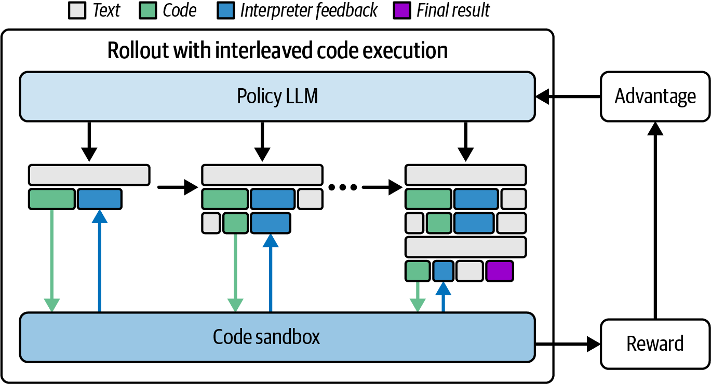
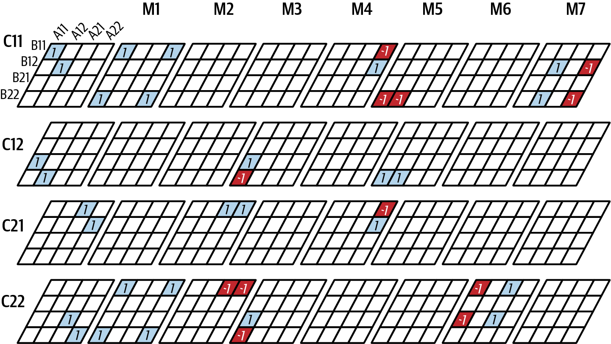
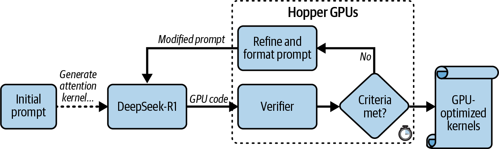
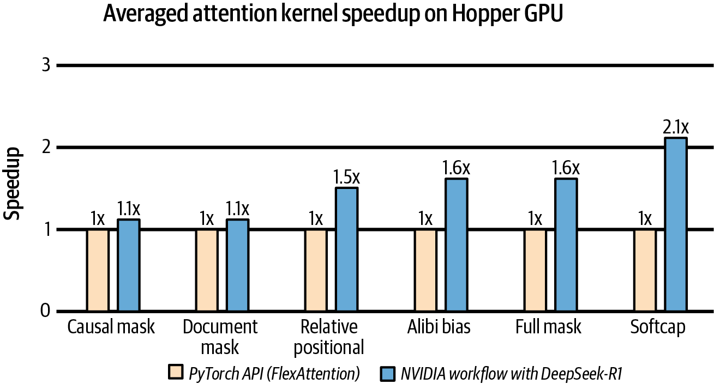
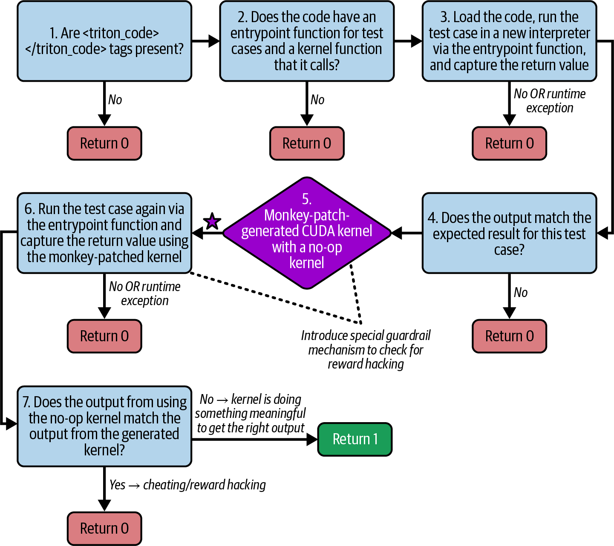
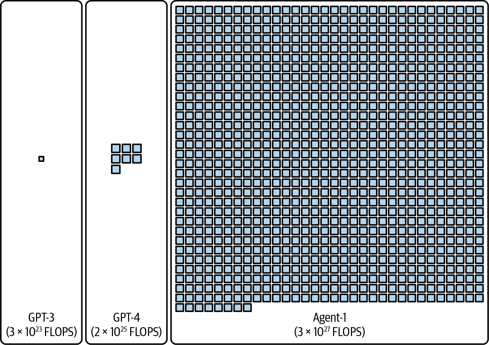
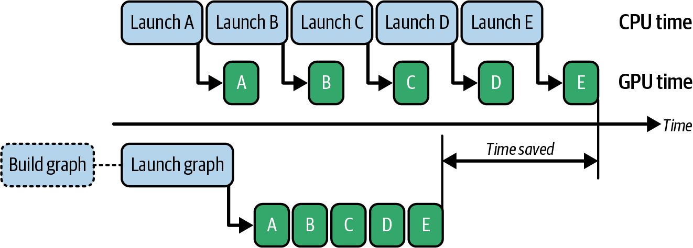
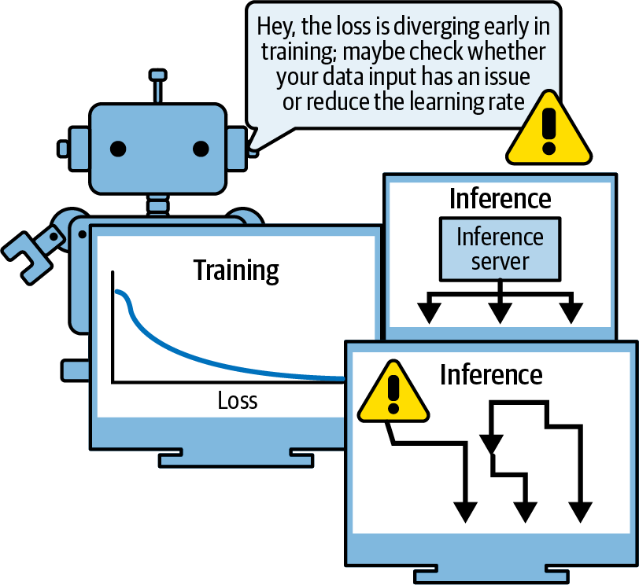

本章汇集一系列案例研究与未来趋势，说明人类与 AI 如何协作优化 AI 系统性能。具体而言，AI 可协助微调底层 GPU 代码，产生比人工实现运行更快的内核。
从更广角度看，这些例子表明，即使是矩阵乘法等核心操作中的算法创新，也可能带来类似添置新硬件的性能收益。概念上，可考虑利用一系列强化学习（reinforcement learning，RL） rollout（例如迭代）的奖励反馈来搜索最适合目标环境的 GPU 内核代码，如图 20-1所示。
这些 AI 辅助方法可帮助提升性能、缩短训练时间并降低运营成本，也可能让较小系统更高效地部署更大模型，推动未来 AI 进展。换言之，这是 AI 帮助创造更好的 AI。

并非所有 AI 优化都发生在代码层面。有时，优化会深入算法和数学领域。一个开创性例子是 DeepMind 2022 年的 AlphaTensor 项目，其中 AI 被用于发现新的通用矩阵乘法（general matrix multiply，GEMM）技术。
GEMM 是支撑几乎所有模型训练和推理负载的核心操作。GEMM 效率的轻微改进都可能对整个 AI 领域产生巨大影响。AlphaTensor 将快速算法搜索形式化为单人博弈，使用强化学习探索大量不同可能性。
令人惊讶的结果是，它找到的矩阵乘法公式在当时的某些设置中优于已知人工推导方法。例如，如图 20-2所示，它重新发现了 Strassen 著名的 2 × 2 矩阵次二次算法，并针对更大矩阵尺寸进行了改进。
真正的验证来自这些算法在实际硬件上的测试。AlphaTensor 找到了一种面向 NVIDIA Volta V100 GPU 世代的方法：在其测试设置中，大矩阵乘法比当时 V100 世代的标准 NVIDIA cuBLAS 库快约 10%–20%。GEMM 性能提升 10%–20% 具有重要意义，近似于为模型前向和反向传播获得额外算力；但结果受矩阵形状、精度、库版本和硬件限制。

这类收益通常来自新一代硬件，或数月的底层 CUDA 调优；但在此案例中，AI 在相对较短时间内从数学上找到了更优方法。
启示是：在人类工程师认为已很新颖的基础算法与数学操作中，可能仍有尚未发现的效率空间。AI 可以筛选数千乃至数百万种算法变体，这是人类无法在合理时间内逐一尝试的。对性能工程师而言，AlphaTensor 的成功表明算法创新并未结束。未来，AI 可能为卷积、排序或注意力等基础操作提供更快算法的新工具箱。
这里的投资回报（ROI）较为间接但影响很大。若将 AlphaTensor 的矩阵乘法算法纳入 GPU 库，兼容的大规模训练或推理负载可能立即获得速度提升，影响范围可从图形渲染、LLM 性能延伸到科学计算。AlphaTensor 的结果表明：在数百 GPU、数千次训练迭代中，约 15% 的速度改善可转化为大量时间与能耗节省。它无需额外硬件，仅凭更智能的软件；但仍需克服算法稳定性、数值误差、实现开销和通用性等问题。
对超大规模性能工程师的启示是：应对软件栈各层的 AI 驱动优化保持开放。即使 GEMM 这类最基础、已充分优化的操作也可能仍有改进空间。让 AI 不受人类偏见限制地探索优化空间，有可能显著缩短整体运行时间。
截至写作时，AlphaTensor 的矩阵乘法算法仍属实验性研究。cuBLAS 等主流 GPU 库尚未纳入这些技术，仍需进一步验证与泛化。
底层 GPU 代码优化长期被视为只有“CUDA 高手”（CUDA Ninjas）才能掌握的技艺，但已有研究显示 AI 可执行这些专家任务。NVIDIA 工程师以强大的推理模型 DeepSeek-R1 进行实验，考察它能否为复杂注意力机制生成可与高性能手工调优实现竞争的 CUDA 内核。
作为推理模型，DeepSeek-R1 采用“推理时扩展”（inference-time scaling）策略：它不在生成响应前只快速经过模型一次，而是在一段时间内不断完善输出，通常可用时间越多，探索越充分。DeepSeek-R1 一类推理模型经过微调以进行更长思考并迭代答案，类似人类在回答前花时间推敲。
在该实验中，NVIDIA 在一块 H100 上部署 R1，并给它 15 分钟生成优化注意力内核代码。工程师在生成器循环中插入验证器（verifier）程序：R1 每提出一个内核，验证器就检查生成内核的正确性并测量效率。生成 → 验证 → 反馈 → 迭代循环类似下面的伪代码：
foriterationinrange(max_iters):code=R1_model.generate_code(prompt)valid,runtime=verifier.verify(code)ifvalidandruntime<target_time:break# Accept this kernelprompt=refine_prompt(prompt,verifier.feedback)...
该反馈循环为下一次内核代码迭代提供改进提示词的指导，循环持续到代码满足给定标准，如图 20-3所示。

实验使用了如下提示词：
Please write a GPU attention kernel to support relative position encodings. Implement the relative positional encoding on the fly within the kernel. The complete code should be returned, including the necessary modifications.
Use the following function to compute the relative positional encoding:
def relative_positional(score, b, h, q_idx, kv_idx):
return score + (q_idx - kv_idx)
When implementing the kernel, keep in mind that a constant scaling factor 1.44269504 should be applied to the relative positional encoding due to qk_scale = sm_scale * 1.44269504. The PyTorch reference does not need to scale the relative positional encoding, but in the GPU kernel, use:
qk = qk * qk_scale + rel_pos * 1.44269504
Please provide the complete updated kernel code that incorporates these changes, ensuring that the relative positional encoding is applied efficiently within the kernel operations.
借助该提示词，AI 为注意力生成了功能正确的 CUDA 内核。（注意 1.44269504 = 1/ln(2)。形成 qk 时，提示词使用该值相应缩放相对位置项。）除正确性外，生成内核在 NVIDIA 所报告的评测中，相对内置 PyTorch FlexAttention API 获得了 1.1–2.1 倍加速。图 20-4展示了生成内核与 PyTorch 优化 FlexAttention 在各种注意力模式（包括因果掩码和长文档掩码）下的性能比较。结果取决于 GPU、输入形状、框架版本和基准方法。

更令人印象深刻的是，使用斯坦福的 KernelBench 套件（注意力任务），AI 生成内核在基础测试用例（Level-1）上的可验证正确率为 100%，在复杂用例（Level-2）上为 96%。这表明其在该基准中的正确性较高，但不足以单凭此断言与人类工程师在所有任务和边界条件下具有同等可靠性。
实践中，应像 KernelBench 那样，将此类验证器系统与健壮测试套件集成，避免罕见边界条件将错误引入生成代码；还应包含数值容差、内存安全、并发性、确定性和目标负载回归测试。
启示是：为 LLM 提供恰当工具来验证、批评和改进输出，可以提高代码质量。直观上，这一工作流等同于人类工程师反复分析、调试和改进自己的代码。生成 → 验证 → 改进循环让粗略代码草案在约 15 分钟内演进为该实验标准下的高质量注意力实现，展示了 AI 辅助性能调优的强大范式；生产可用性仍需独立评审和长期维护验证。
其 ROI 可能具有颠覆性，因为即使 NVIDIA 顶尖 CUDA 工程师也可能需要数小时或数天手工构建并测试新型注意力内核变体。借助 AI 辅助优化，AI 或许能以更短时间生成效率可比的底层 CUDA 内核，使工程师可聚焦于更高层 AI 系统优化机会，以及 AI 难以发现和修复的边界条件。实际成本还应包括模型推理、验证基础设施、人工审查与安全治理。
尽管仍需人类监督，该实验展示了一条可行路径：在获得显著运行时加速的同时，降低 GPU 优化软件的开发成本。对 AI 系统性能工程师而言，这类 AI 辅助暗示未来工作流可能是与 AI 副驾（copilot）协作，快速协同设计跨硬件、软件和算法的优化。AI 副驾可放大人类生产力；可将其视为经过预训练和微调、能凭借从现有代码库学到的 CUDA 技巧推理复杂问题的 AI 助手。
另一家创业公司 Predibase 采用略有不同的强化学习方法，展示了自动化 GPU 编程。它提出一个更大胆的问题：能否用大量 PyTorch 和 OpenAI Triton 代码示例，将 LLM 训练成高级 Triton 程序员？
OpenAI Triton 是一种类 Python 的 GPU 编程语言（及编译器），可简化 GPU 编程。任务是考察 AI 能否生成替代 PyTorch 代码的高效 Triton 代码，并在 NVIDIA GPU 上运行得比 PyTorch 的 TorchInductor 编译器（使用 Triton 生成 GPU 代码）更快。
在其实验中，Predibase 使用 H100 GPU 集群，并在一个规模适中的 320 亿参数 Qwen2.5-Coder-32B-Instruct LLM 上采用名为组相对偏好优化（Group Relative Preference Optimization，GRPO）的 RL 微调过程。Predibase 的 RL 调优模型能为全部 13 项任务生成正确 Triton 内核。值得注意的是，其环境针对正确性而非运行时性能优化。
为此，Predibase 构建奖励函数，以强化学习引导模型持续生成更好的代码。具体而言，LLM 先生成候选内核，系统自动编译并测试其正确性和速度。若图 20-5所示的内核无错误运行、产生正确结果且快于基线内核，模型便获得正奖励。
经过许多轮基于 RL 的试错，模型稳步提升。在数天训练内，AI 从近 0% 成功率提升到仅 5,000 个训练步后约 40% 的时间能生成可工作的内核。一些生成的 Triton 内核比基线快最高约 3 倍；模型还会随训练继续改进。这些数字来自该实验设置，不应直接外推到其他任务或性能基线。

该结果表明，AI 可通过测试、观察反馈和调整来优化代码，类似工程师迭代改进代码的方式。通过同时奖励正确性与速度，强化学习能使 AI 生成代码对齐真实世界性能指标，并促使 AI 探索 warp 级并行、减少全局内存访问等优化以提升整体性能。
Predibase 演示的启示与 ROI 在于：这种 AI 辅助可自动化内核代码级性能优化，可能减少手工调优需要。工程师无需为新模型手工创建自定义内核，训练好的 AI 助手可生成多个变体并选择最佳者。这可缩短开发周期，使工程师能聚焦探索新模型架构等工作；但要达到前沿性能仍取决于测试覆盖、硬件知识、人工审查和系统集成。
这种方法也暗示未来 Triton、Python 等高级语言和框架可能替代部分手工 CUDA 编程。它们降低 GPU 编程门槛，长期可能形成 AI 智能体持续编写和改进计算内核的自动化流水线，成为性能工程师的重要工具；低层 CUDA 专业知识仍对调试、验证及突破极限性能至关重要。
到目前为止，这些案例研究为我们展示了真实世界超大规模 AI 优化的一个切面。展望未来，AI 系统性能工程师面对令人振奋的挑战与机遇。下一时代的 AI 模型将需要更大、更快的硬件，也需要更智能、更高效地使用硬件的方法。下面转向若干关键未来趋势，仍聚焦于对性能工程师有实用价值的洞见和最佳实践。
2025 年初，AI Futures Project 的一份报告描述了一系列里程碑和 AI 模型/智能体，用于设想未来数年技术进步、研究速度提升及对 AI 研发的变革性收益。报告称前沿 AI 实验室正在设计和建设史上最大的 AI 数据中心之一。这些超级集群若实现，将提供远超既有系统的计算量，并可能推动模型性能的大幅跃升。它是情景预测而非已验证的事实或时间表。
作为背景，训练 GPT-3 估计需要约 3 × 1023 FLOPS，GPT-4 约 2 × 1025 FLOPS。设想中的超大规模 AI 工厂目标是处理约 1027–1028 FLOPS 的训练量，约为 GPT-4 所用计算量的 100 倍，如图 20-6所示。GPT-4 训练计算量不是官方公开定值，且这些未来规模均为报告情景中的估算。
研究者设想的 Agent-1 模型将用比前代模型多两个数量级的计算量训练。这可能带来更快训练运行与反馈循环，并形成高吞吐、高效率的平台，显著缩短研究周期、加速机器学习突破；但这是对未来能力的推演。
按 AI Futures Project 的情景设定，Agent-1 被设想为可实时生成和优化代码的自我改进模型。通过自动化从常规调试到复杂内核融合的编码任务，这一前沿 AI 系统可能缩短获得洞见的时间，并拓展全球研究工程师的创造空间。自动化编码可充当生产力放大器，实现快速迭代，让研究者以更少人工开销探索更宏大的想法。
这些巨型 AI 系统被设想为支持持续模型微调与改进。后续模型 Agent-2 可能是一个从不真正结束训练的持续学习 AI：它不再只检查点化并部署静态模型，而是基于新生成的合成数据每天更新权重。这同样是情景描述，持续训练还面临稳定性、成本、安全与评估挑战。

这种永续或持续学习过程旨在通过不断改进性能、适应新信息，让系统保持前沿。若能实现，它将使我们从部署静态训练、静态微调模型的现有范式转变；是否能安全、稳定、经济地实现仍未确定。
这种持续再训练（Agent-2 的方法）仍是活跃研究领域，因为需要保持模型稳定性并避免灾难性遗忘（catastrophic forgetting）。灾难性遗忘是指模型在专门化新任务时，执行先前任务的能力下降。
报告将 Agent-3 描述为利用算法突破大幅提升编码效率的 AI 系统。通过整合先进神经草稿板（neural scratchpads）和迭代蒸馏与放大技术，设想中的 Agent-3 会成为快速、成本有效、超越人类能力的编程者。
在 AI Futures Project 提出的假设情景中，Agent-3 可并行运行 200,000 个副本，形成相当于数万名顶尖人类程序员、且速度快 30 倍的虚拟劳动力。这种大规模并行若实现，将加速研究周期，并推动先进 AI 算法与系统的设计和实现普及化。
这一预测远超当今实际限制；不过，它是关于未来 AI 生产力潜力的有趣思想实验。
加速研究可让新想法被迅速开发、测试与改进，R&D 的加速可能为 AI 性能大幅提升铺平道路。
报告设想，自我改进 AI 将达到能在研发任务上有效超越人类团队的水平。这些系统可持续运行，处理海量数据流，并以远超人类的速度改进算法；这是一种未来假设，并非对当前能力的描述。
在该设想中，不间断改进循环每天都会提升模型准确性和效率，精简 R&D 流水线、降低运营成本并实现此前难以想象的创新。人类团队将转向监督和高层战略角色，而 AI 处理大量执行工作并以更快节奏推动突破。实际部署仍需人类问责、安全验证与治理。
Agent-4 是一个假设的、自我改写且超越人类能力的研究者。这本质上对应一种通用人工智能（AGI）情景：AI 可重写自身代码来改进自己。Agent-4 在前代基础上发展，其设想中的区别是以最高效率自我改进并优化复杂研究任务。
在 Agent-4 情景中，问题求解被加速。它利用机制可解释性（mechanistic interpretability）澄清自身内部决策过程，以帮助理解底层算法与推理过程的内部工作机制。
实际而言，设想中的 Agent-4 性能使它能解决科学挑战、生成创新研究设计，并推动生成式 AI 模型能力边界；且速度远超人类。这将是 AI 研发的重大突破，形成发现与进步的良性循环。这些能力尚属假设。
AI Futures Project 展示了这些智能体的演进，包括 AI 系统基础设施、自动化编码、持续学习和自我改进模型的进展。情景中的每一代均提升研究生产力与创新能力。这些智能体共同强调：AI 系统性能与效率对迈向 AGI 和超级智能的进展至关重要。
我们正进入 AI 性能工具箱中高度智能化编译器与自动化的时代。性能工程师手工调优每个 CUDA 内核、摆弄每个底层旋钮的时代正在过去；高层工具乃至 AI 驱动系统越来越多地承担繁重工作，以榨取最后一点性能。
PyTorch、TensorFlow、JAX 等 AI 框架正快速演进，利用智能编译器和执行图优化器发挥最新 GPU 能力。这些框架可自动融合操作并利用 Tensor Core，也可借助张量内存加速器（Tensor Memory Accelerator，TMA）等现代 GPU 特性重叠计算与异步数据移动。
此外，OpenAI 的 Triton 编译器让开发者使用其基于 Python 的语言编写 GPU 内核。Triton 在底层将这些基于 Python 的内核编译为高效 CUDA 内核，同时对 Triton 用户抽象掉这部分复杂性。
这类工具正日益强大。OpenAI 与 NVIDIA 紧密合作，使 Triton 支持最新 GPU 架构并自动利用其专用特性；实际支持范围应以相应发布版本文档为准。
新一代 GPU 发布后，更新后的 Triton 编译器可暴露其新能力，使研究人员或工程师不必了解底层 C++ 或 PTX 汇编代码。他们编写高层 Python 代码，编译器则为特定 GPU 环境生成优化代码；在特殊形状、数值语义或极限性能场景，底层知识仍很重要。
许多过去需要手写的优化已由编译器自动化，且这一趋势正在加速。自动内核融合、内核启动参数自动调优，乃至部分数值精度决策都可交由编译器和 AI 助手完成；结果仍应以正确性和性能测试验证。
除内核生成外，现代框架对执行图和调度也愈发智能。图执行有助于降低 CPU–GPU 同步开销，并为跨整个图的全局优化打开空间。NVIDIA CUDA Graph 等技术可将一系列 GPU 操作及其依赖捕获为静态图，再使用 cudaGraphInstantiate() 和 cudaGraphLaunch() API 以极低 CPU 开销实例化和启动，如图 20-7所示。

我们已经看到 AI 框架自动将训练循环和其他重复模式捕获为图以降低开销。即使执行图是动态而非静态，框架也可能先追踪一次，再反复运行该追踪结果；可捕获范围与重编译行为取决于图动态性和框架版本。
此外，通信与计算的重叠将越来越多地自动化。过去这需要人工安排，但系统可能分析模型后发现，例如 GPU 1 计算第 10 层时，GPU 2 可并行开始第 11 层计算，相当于在底层执行流水线并行。
截至写作时，完全自动的流水线并行仍是活跃研究领域。当前 AI 框架通常仍要求显式实现流水线并行，尚不能在没有用户指导的情况下透明地将顺序层分布到多 GPU。
我们已经了解如何实施 3D、4D、5D 并行（数据、张量、模型/流水线、专家、上下文/序列），以在训练和服务大模型时最大化 GPU 利用率。这类技术兼具艺术与科学，目前仍需要大量人类直觉和经验。它们目前被记录在Hugging Face Ultra-Scale Playbook等专家指南中；期望未来会被纳入编译器、库和框架。
归根结底，AI 框架应当理解这些模式，并安排工作以让分布式系统的各个部分保持忙碌；用户不必亲自分析、调试并优化每一条 GPU 流、每次内存传输和每个网络调用。例如，未来某一天，我们也许会拥有一位 AI 顾问：当你定义一个 5,000 亿参数模型时，它会立即建议：“每个节点采用八路张量并行（tensor parallelism），再在节点之间采用四路流水线并行；此外，为获得最佳效率，请使用这些层分组和块大小。”这仍是对未来工具能力的设想，实际配置必须以具体模型、硬件和测量结果为准。
对性能工程师而言，这可能带来巨大的生产力提升。与其无休止地尝试策略和配置，不如从一开始就向 AI 系统询问接近最优的方案。将人类洞见与编译器/AI 自动化结合，在较少投入下也许能取得过去所需大量试验才能得到的结果。这有点像再次从汇编语言迈向高级语言：我们把更多责任交给工具。性能工程师的角色将更偏向于引导这些工具，并快速验证它们是否确实做得可靠，而不是缓慢地手工试验和验证每一项设置。
简言之，AI 软件栈正变得更加智能和自主。较好的实践是接纳并审慎评估这些工具。利用了解硬件能力和性能选项的高级编译器，例如 OpenAI 的 Triton；也应持续关注新兴的 AI 驱动优化服务。它们起初可能像黑盒，却凝结了大量来之不易的性能经验，仍需以可复现的基准测试验证其收益。
自动化的推进不仅发生在代码层面，也扩展到系统和集群运维层面。未来，AI 系统可能日益自行管理和优化，特别是在任一时刻都有大量并发作业和请求在运行、因而需要复杂资源共享策略的大规模训练与推理集群中。
一个可能很快发展的方向是由 AI 驱动的自主调度和集群管理。今天的集群编排器（如 Kubernetes、SLURM）仍主要依赖静态启发式规则和简单的资源请求，但更具自适应性的调度机制正在兴起。设想一个智能代理观察整个集群的状态，并学习如何调度推理请求和训练作业以最大化总体吞吐量。
这个调度代理可能学会：某些请求或作业可以同置于一个节点而互不干扰，例如一个计算密集，另一个内存带宽密集。通过摄取 Kubernetes 集群的遥测数据（Pod 的 GPU 利用率、队列等待时间等），AI 调度器可以动态重新调度作业或调整 Pod 资源，以最大化总体吞吐量并尽量减少空闲时间。
从某种意义上说，集群开始像自动驾驶汽车一样，根据实时状况不断调整其“驾驶策略”（资源分配），而不是遵循固定路线。对性能工程师的好处是更高的资源利用率和更少的瓶颈。我们的工作将转向为 AI 调度器设定高层策略和目标，再让它确定具体做法。
例如，NVIDIA Dynamo 分布式推理框架可协调跨 GPU 和节点的请求调度、KV 缓存放置和数据移动；其与 Kubernetes 的集成和解耦式推理能力应以所使用版本的官方文档为准。在适用配置中，Dynamo 的调度器可将微批次分配到不同流水线阶段，并通过重新路由请求处理节点故障。
借助权重流式传输（weight streaming）和激活卸载（activation offloading）等技术，模型层可按需从主机内存流送到 GPU，仅在需要权重时（如解码阶段）加载；这一过程也可扩展到多个节点和 GPU。理论上，这能将一个 100 万亿参数模型的部分内容托管在成本较低的存储上，从而有助于扩展推理；实际效果取决于存储、网络、缓存命中率及延迟预算。
我们也可能看到面向系统运维人员的 AI 性能副驾（performance copilot）。大语言模型可作为支持角色成为基础设施的一部分。例如，性能工程师可以向 AI 助手询问“如何加速我的训练作业？”，并得到有依据的建议。听起来颇具想象力，但若这类助手能够从数千次历史运行、日志和调优记录中学习累积知识，便有实现的可能。
AI 性能副驾还可能识别出 GPU 内存利用率偏低并建议增大批大小，或发现梯度噪声尺度较高并建议调整学习率调度。这类代理可封装人类专家积累的部分经验，使这些知识能够随时获得；不过建议应先在隔离环境中验证。
同样，AI 助手可以监控训练作业和推理服务器，并标记异常。例如，如图 20-8所示，助手可在监控训练作业时提示：“训练早期的损失正在发散；请检查数据输入是否有问题，或降低学习率。”
Splunk（现属 Cisco）和 PagerDuty 等公司已将 AI 模型用于系统日志数据，以预测故障并检测数据中心异常。建议将这些理念扩展到面向 AI 工作负载的专用遥测数据。
简言之，AI 为每个运行中的作业和每台推理服务器提供一双始终“新鲜”的眼睛：它能监控、提出建议并实时调整。传统利用率指标可能具有误导性；例如，GPU 因冗余数据传输而 100% 忙碌并不等于有效产出。AI 驱动调度器的目标则是最大化有效吞吐量（goodput），确保 GPU 忙于有用的神经网络计算，这会直接改善成本效率。
例如，在 AI 集群中，可以使用基于 Prometheus 的指标管道为基于 LLM 的助手提供数据：当 GPU 内存因潜在内存泄漏或数据停滞而突然下降时，它发出警报，甚至识别可能的根本原因。这类繁琐工作适合由 AI 辅助自动化，并可全天候持续运行；告警和归因仍应接受人工复核。

AI 的另一项强大用途是 AI 系统的自动调试和故障分析。当训练作业在其为期三个月的运行中途失败时，人类必须通读错误日志、设备统计信息，甚至可能还要查看内存转储，才能找出问题所在：是硬件故障、数值溢出，还是网络短暂异常？
未来，AI 系统可消化包括日志、指标和告警在内的所有数据，并可能比今天更快地定位可能原因。它可能指出：“作业崩溃前，节点 42 出现了 5 次 ECC 内存错误，GPU 上的 HBM 内存器件或通道可能存在问题。”或者：“第 10,000 次迭代时损失变为 NaN，可能是梯度不稳定；可考虑梯度裁剪。”这类归因是候选假设，不应替代硬件诊断和复现测试。
通过从众多历史事件中学习，AI 排障工具可能为工程师节省大量排查时间。一些大型计算设施已在其事件数据库上训练模型，以预测故障并建议修复方法。
更进一步，强化学习（reinforcement learning，RL）可用于实时控制系统行为，其适应能力未必是固定算法能够轻易匹敌的。例如，可训练一个电源管理 RL 代理，在运行中的系统上持续调整频率和核心分配，以最大化每瓦性能（performance per watt）。该代理会通过实时分析系统来学习策略；投入生产前必须设置功耗、温度、可靠性和变更权限等硬性边界。
另一个例子是在 AI 模型中主动管理内存。AI 代理可以学习哪些张量应保留在 GPU 内存，哪些应换出到 CPU 或 NVMe，而不局限于“换出最久未使用项”这类静态规则。通过观察实时访问模式，AI 可更高效地管理缓存；当模式不明显或依赖工作负载时尤其可能有效。
已有前沿实践者使用 RL 优化缓存驱逐、网络拥塞控制等问题。超大规模系统拥有数百个相互作用的组件和资源，复杂性使其成为此类学习型控制的潜在适用对象。可调参数过多，人类难以及时找到最佳设置，更难使设置实时适应不同工作负载。
对性能工程师而言，AI 辅助运维代理的兴起意味着角色将更侧重于编排和监督 AI 驱动的流程，而非手工微调每一个参数。这有点像飞行员管理现代飞机的自动驾驶系统：仍需深厚知识和持续监督，但大量毫秒级控制已经自动化。Tesla 的完全自动驾驶（Full Self-Driving，FSD）模式也类似；驾驶者仍需要知识和直觉来避免困难情境、预防事故，而车辆控制由 FSD 软件辅助自动化。
为了引导 AI 助手高效管理集群，我们需要设定目标、提供安全与公平性护栏，并处理 AI 尚未见过的新情形。负载均衡、故障恢复和内存缓冲区调优等例行优化可交由 AI 协助处理。实际运维还应采用最小权限、人工审批、金丝雀发布和可验证回滚，并明确 SLO 与公平性约束；在此前提下，接纳这一范式将十分重要。
最后，让我们重新审视迈向超大规模100 万亿参数模型的探索。我们已经跨过万亿参数门槛；接下来的问题是未来几年如何扩展到数十万亿乃至数百亿亿参数模型。这类模型会对系统提出什么要求，又需要哪些创新才能让训练成为可能？这里汇集了我们讨论过的所有要素：高效硬件、智能软件和巧妙算法。达到 100 万亿参数规模需要用尽已有技巧，甚至还需要尚未发现的技巧。以下是面向未来的推演，并非已实现能力。
在硬件方面，显而易见的需求是更多内存和更高带宽，最好直接位于 GPU 上。若要训练 100 万亿个参数，就需要高效存储和移动极其庞大的数据量。下一代内存技术将至关重要。
高带宽内存（high-bandwidth memory，HBM）仍在持续演进。HBM3e 已用于 Blackwell 一代 GPU；Rubin 一代及 HBM4 的具体产品配置、供货时间和指标，应以 NVIDIA 与内存供应商届时公布的官方资料为准。书中提到 HBM4 每个堆叠的带宽可能再次翻倍至约 1.6 TB/s，每个模块的容量可能提升到 48 GB 或 64 GB；这些均应视为规格预期而非通用既成事实。
HBM 更高的容量和吞吐量意味着未来 GPU 或许会配备 8 或 16 个、每个 64 GB 的 HBM 堆叠，即单板总计 512 GB 或 1,024 GB 的超高速 HBM RAM。这样的本地 HBM 容量可在每张 GPU 上直接容纳大量模型参数，显著减少数据换入换出的需求；这只是设计空间示例，实际产品不一定采用该配置。
不难看出，这可能支持更大模型、更高带宽的训练运行和更低延迟的推理服务器。过去需要切分到 8 张 GPU 的内容或许可以放入一张；过去需要 100 张 GPU 的内容或许可以放入 10 张，依此类推。实际可缩减的倍数取决于精度、优化器状态、激活、批大小和模型结构。
除 Grace Blackwell Superchip 等多芯片架构外，多个 NVL72 机架可连接为一个大型集群，让数百个 GPU 共享统一的高速网络。从通信角度看，集群在一定程度上会表现得像一颗超级 GPU。这对扩展到 100 万亿参数很重要，因为它意味着我们可以继续增加 GPU 来获得更多总内存和算力，而不立即撞上通信瓶颈；这一推论假定 NVLink 或类似互连能继续扩展到该超大规模。
然而，仅有硬件无法解决 100 万亿参数挑战。软件和算法创新同样重要，甚至可能更重要。例如，用朴素数据并行训练这种规模的模型会极其缓慢且昂贵——设想优化器在每一步都要更新 100 万亿个权重。我们需要大量采用降低有效计算量的技术。一个重要方向是低数值精度：除 FP8 和 FP4 外，未来硬件或许会为网络某些部分支持更低的 1 位精度。混合方案很可能至关重要：模型的大部分使用低精度，敏感部分使用更高精度；可训练性和最终质量必须逐模型验证。
作为性能工程师，我们应关注这些新能力并准备加以利用。若要训练 100 万亿参数模型，为了效率，极可能需要低精度；否则工作负载可能慢到、贵到难以承受。
好消息是，硬件和库有望让这一转变相对顺畅。我们已在 CUDA 中看到 NVIDIA Transformer Engine（TE）和 Tensor Cores 对低精度算术的一流支持；PyTorch 和 OpenAI 的 Triton 也可充分利用 CUDA。可用的数据类型和性能仍随硬件、CUDA、驱动和框架版本而变化。
另一个关键方法是稀疏性和条件计算。我们已在稀疏专家混合（mixture of experts，MoE）等模型中采用稀疏激活：对于给定输入，只有模型参数的一小部分处于活跃状态。这一想法可以推广，使每次不必都使用完整的 100 万亿参数，而只使用所需部分。采用 MoE 架构的模型已显示出较强能力和效率；若 100 万亿参数模型出现，其中许多可能需要稀疏激活，这仍是一项预测。
对性能工程师而言，这意味着吞吐量不仅取决于矩阵乘法速度，也取决于 MoE 条件路由效率、专家输出缓存和稀疏数据交换的通信模式。这增加了复杂性，也带来机会：若能确保合适的专家在合适的时间位于合适的设备上，从而最小化通信，便可能显著加速这些大模型。
我们还应考虑算法效率改进。占用更少内存的优化器可能至关重要。传统 Adam 优化器变体通常为动量和方差估计各保留一份额外权重副本，这实际上使内存占用约增至三倍。因此，如果有 100 万亿参数权重，还需要额外 200 万亿个数值来保存优化器状态。Adafactor、Shampoo 等内存高效优化器有助于降低此开销，但其收敛行为和实现成本应在具体任务上评估。
激活检查点（activation checkpointing）等技术通过重新计算激活值而非存储它们，以计算换取内存。在 100 万亿参数规模下，几乎肯定需要积极采用检查点。一个更激进的想法是：也许不在每一步更新所有权重，而是轮换更新权重子集——像是不每天浇灌所有植物，而是轮流浇灌。若设计得当，模型仍能有效学习，同时每个参数的更新频率更低，从而降低系统总计算需求；这属于研究性设想，需要严格验证收敛和质量。
这些想法与算法设计领域交叉，但性能感知视角仍然有用。对于训练和推理的每个环节，我们都应追问：“真的需要如此频繁地、以如此精度执行X吗？”答案常常是可以找到仍然有效、却更便宜的近似方法。在 100 万亿参数规模下，这些近似可能节省数月时间或数百万美元，但前提是质量、可靠性和安全性目标不被牺牲。
超大规模训练中常被忽视的一个方面是基础设施和网络。当讨论让超过 10,000 个 GPU 协作训练一个模型的集群时，网络结构变得与 GPU 本身同样重要。以太网和 InfiniBand 技术在吞吐量和更智能的自适应路由等方面不断演进。NVIDIA Spectrum-X 是面向 AI 优化的以太网结构（例如包含 RoCE、自适应路由和高双向带宽），旨在降低大规模训练和推理工作负载中的拥塞；具体能力需参考部署版本及其配置。
性能工程师需要深入理解这些层级，并确保数据在正确时间位于正确位置。目标是模拟横跨 GPU 与 CPU 的巨大内存空间，使模型即便放不进一台机器，程序员也可在一定程度上透明地处理它。今天已有一部分能力可通过 Unified Memory 和按需分页系统实现，例如使用 cudaMemPrefetchAsync() 将页面预先放到目标设备上，以避免缺页停顿。但在 100 万亿参数规模下，这些功能将经受严峻考验。
前沿研究实验室和云服务商都在持续建设大规模算力集群；关于 xAI、OpenAI 或 Microsoft 正在建设“超过 1,000,000 张 GPU”集群的说法，不应在未获相应官方、可核实资料支持时视为已确认事实。在 100 万亿参数规模下，一个作业可能跨越整个数据中心的硬件，因此性能工程师必须从数据中心及多数据中心（全球）尺度思考问题。
最后，随着模型及其所需算力扩大，还会出现社会技术层面的趋势：任何单个团队，甚至单个公司，可能都难以独自训练最大的模型。我们希望 AI 社区会出现更多协作和资源共享来处理这些巨大项目，这类似于粒子物理实验等大型科学项目由众多机构参与。类似现已解散的非营利倡议 Open Collective Foundation 的项目，或可汇集 AI 计算资源以训练 100 万亿参数模型，再将其与世界共享；这只是组织模式的设想。
这将要求标准化检查点格式等内容、共同开发训练代码，并思考模型的多方所有权。虽然这本身并非性能问题，却会影响我们构建大型 AI 系统的方式。我们需要使系统更具容错性、更容易创建快照，以便共享部分结果。作为工程师，除了纯速度，还可能需要为可复现性和互操作性而优化，从而让不同团队顺畅高效地参与训练和推理工作流的不同环节。
达到 100 万亿参数模型将需要整体性的全栈创新。这个挑战没有单一解法，而是拼图的每一块都必须改进：硬件需要更快、能容纳更多数据；软件需要更强的自优化能力，并通过编译器、AI 助手和实时自适应更高效地使用资源；算法则需通过稀疏性、低精度和更好的优化器，巧妙地避免不必要的工作。
性能工程师的职责是将这些进展整合为连贯的工作流。这就像组装一辆高性能赛车：发动机、轮胎、空气动力学和驾驶技术都必须协同工作。如果做得好，眼下看似不可能的事情——例如以可承受成本训练 100 万亿参数——未来或许会成为现实。
不久之前，万亿参数模型听起来还很疯狂。如今，Moonshot AI 的开放权重模型 Kimi K2 等已展示了这一规模；其公开资料通常描述为 1 万亿参数 MoE、每个 token 激活 320 亿参数，具体数值及版本应以模型发布方资料为准。按照这样的进展速度，并借助 AI 辅助的人类创造力，我们或能在较短时间内跨越下一个数量级的里程碑。
以下各点概括本章案例研究和超大规模 AI 系统性能工程假设性未来状态中讨论的最佳实践与新兴趋势：
大语言模型的性能提升，确实来自软硬件紧密集成的协同设计创新所带来的突破。
Google DeepMind、NVIDIA 和 Predibase 已展示 AI 辅助发现和优化矩阵乘法、注意力等核心内核。这些工作表明，AI 可以生成、测试并改进底层 GPU 代码，并在特定基准中以很少人工干预取得显著加速；具体收益仍取决于任务和测试条件。
训练 100 万亿参数模型将需要结合激进量化、多维并行（数据、流水线、张量、专家及上下文/序列）和精细的跨机架通信编排。这强调未来 AI 扩展既依赖硬件能力，也依赖软件层调度的创造力；这是面向未来的技术判断。
下一代 AI 数据中心正被设计为提供数量级增长的计算能力。这类设施可能以远超当前水平的计算预算训练 AI 模型，并支持使用当前系统 FLOPS 的 100 到 1,000 倍的训练运行；实际落地规模取决于建设、供电、网络与经济条件。
未来模型可能成为自我改进系统，能够生成和优化代码、利用新数据持续更新权重，甚至重写自身代码。这种持续学习和改进的循环有望缩短突破间隔，并形成在某些研究与研发任务上超越人类团队的虚拟劳动力；这属于前瞻性设想，需兼顾安全、可控性和评估。
除调度外，AI 副驾还可监控系统日志和训练/推理工作负载，快速检测异常，包括精度损失突增或硬件错误数量上升。它们可辅助自动调试、进行故障分析，甚至通过强化学习学习较优配置，从而改善每瓦性能和单位时间性能；生产使用须有监督与验证。
所有这些协同设计工作最终都旨在最大化单位成本的吞吐量。具体来说，目标是每美元、每瓦电力每秒处理和生成更多 token。例如，Grace Blackwell NVL72 机架系统相对上一代 Hopper 的每瓦性能提升 25 倍是厂商在特定配置和指标下的宣称；实际结果及每 token 成本需按工作负载和部署条件测量。
本书标志着 AI 系统性能工程领域的一个转折点。NVIDIA 将 CPU 和 GPU 紧密集成到 Grace Hopper、Grace Blackwell 等超级芯片模块中，带来了新的计算效率和规模；Vera Rubin 和 Feynman 的实际产品形态、时间表和能力仍应以官方发布为准。在底层，GPU 使用高度优化的 Tensor Cores，以及针对大语言模型基础计算优化的 Transformer Engine。
NVIDIA GB200/GB300 NVL72 等超级计算系统将 72 个 GPU 连接为一个处理单元（NVLink 域），并以 NVLink、NVSwitch 和 SHARP 等技术构成机架和数据中心通信基础。这些技术可为多万亿参数模型提供低延迟推理能力，实际延迟和吞吐量取决于模型、并行策略、网络及服务负载。
在软件方面，vLLM、SGLang、NVIDIA Dynamo 和 TensorRT-LLM 等工具可改善大型推理集群中的调度和资源使用。这包括飞行中批处理（in-flight batching）、分页 KV 缓存（paged KV cache），以及为提高效率将提示词预填充阶段与生成解码阶段分离到不同资源池的技术。这些方法有助于降低尾延迟并提高每瓦吞吐量，实际收益应按部署环境测量。
这些例子说明了协同设计的力量：硬件、软件和算法共同演进。这种以硬件特性理解（mechanical sympathy）为基础的协作，有助于缩短训练时间、改善推理性能并降低运营费用，是在当今快速发展且资本密集的 AI 系统中获得可衡量投资回报的必要条件。
此外，来自 Google DeepMind、NVIDIA 和 Predibase 的 AI 驱动编程与算法代理展示了 AI 如何帮助优化 AI。随着模型和系统变得过于复杂而难以手工调优，自动化可以处理例行优化，使人类工程师能专注于更高层的优化和系统设计。
我们正从蛮力扩展转向智能扩展：每个周期完成更多有用工作，充分挖掘新硬件特性，并让 AI 助手管理细节。性能工程师将向软件栈上层发展，成为在效率、可靠性和可持续性之间取得平衡的全球算力生态系统架构师。
作为 AI 系统性能工程师，我们的角色将从单节点内核扩展到系统级和设施级优化。我们将依靠直觉发现瓶颈——例如缓慢的 all-reduce 模式——再引导 AI 工具修复它们。同时必须不断学习，因为硬件和算法创新的速度只会加快。
总之，要保持相关性和竞争力，应夯实 AI 系统性能基础，保持好奇心，试验新的硬件和软件进展，审慎评估 AI 建议，并准备好适应包括量子计算在内不断变化的技术版图。设想一下：在研究更加普惠、可一键访问 AI 超级计算机、多万亿参数模型日益可及的时代，你可能成为下一次重大超级智能突破的推动者之一；这仍是鼓舞性的未来愿景，而非确定预测。